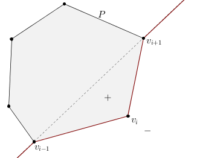
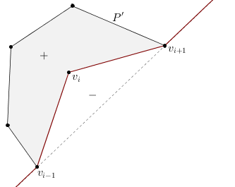

|
CGAL 4.13 - 2D Generalized Barycentric Coordinates
|
|
CGAL 4.13 - 2D Generalized Barycentric Coordinates
|
The package 2D Generalized Barycentric Coordinates offers an efficient and robust implementation of two-dimensional closed-form generalized barycentric coordinates defined for simple two-dimensional polygons. If coordinates with respect to multivariate scattered points instead of a polygon are required, please refer to natural neighbour coordinates from the package 2D and Surface Function Interpolation.
In particular, the package includes an implementation of Wachspress, mean value, and discrete harmonic coordinates and provides some extra functions to compute barycentric coordinates with respect to segments (segment coordinates) and triangles (triangle coordinates). The section Theory of 2D Generalized Barycentric Coordinates gives a short introduction to the topic of barycentric coordinates.
Each class that computes barycentric coordinates is parameterized by a traits class. This traits class specifies types and geometric primitives that are used in the computation and must be a model of the concept BarycentricTraits_2.
The main entry point to the component is an input iterator over the vertices of a polygon. The polygon's vertices must follow clockwise or anticlockwise ordering and can be of any type. However, internally the classes use the type CGAL::Point_2, that is why an appropriate traits class that converts the user's type to CGAL::Point_2 must be provided. The same argument holds for query points.
Mean value coordinates are the most generic coordinates in this package because they allow an arbitrary simple polygon as input. Wachspress and discrete harmonic coordinates are, by definition, limited to strictly convex polygons. Segment coordinates take as input any non-degenerate segment, and triangle coordinates allow an arbitrary non-degenerate triangle.
Segment and triangle coordinates can be computed by using either a global function or creating the corresponding class. All other generalized coordinates can be computed by creating an instance of the class CGAL::Barycentric_coordinates::Generalized_barycentric_coordinates_2 parameterized by an appropriate coordinate type that must be a model of the concept BarycentricCoordinates_2.
Any point in the plane may be taken as a query point. However, we do not recommend to use Wachspress and discrete harmonic coordinates with query points outside the closure of a polygon because at some of those points these coordinates are not well-defined, as explained in the Section Degeneracies and Special Cases.
Once instantiated for some polygon, the coordinates can be computed multiple times for different query points with respect to all the vertices of the provided polygon. Use the Reference Manual for the detailed interface.
The output of the computation is a set of coordinate values at the current query point with respect to all the vertices of the polygon. This output can be stored in an arbitrary container providing an appropriate output iterator. In addition, all the classes return a pointer to the last stored element and a status of the computation (Boolean true or false).
This is a simple example to show the use of the global function CGAL::Barycentric_coordinates::compute_segment_coordinates_2(). We compute coordinates at three green points along the segment \([v_0, v_1]\) and at two blue points outside this segment but along its supporting line. We use the exact kernel and return coordinates as an array of two values. Again, the symmetry of the query points helps us to recognize errors that may have occured during the computation.
File Barycentric_coordinates_2/Segment_coordinates_example.cpp
In this example we show how to use the class CGAL::Barycentric_coordinates::Triangle_coordinates_2 with the Simple_cartesian kernel for double type. We compute coordinates for three sets of points: interior (green), boundary (red), and exterior (blue). Note that some of the coordinate values for the exterior points are negative. We use a standard container of the type std::vector and std::insert_iterator to access and store the resulting coordinate values.
File Barycentric_coordinates_2/Triangle_coordinates_example.cpp
In the following example we create 1000 random points, then we take the convex hull of this set of points as our polygon, and compute Wachspress coordinates at all the defined points. We use the Simple_cartesian kernel with double type as a traits class and store obtained coordinate values in a container of the type std::vector. The output iterator is std::back_insert_iterator.
File Barycentric_coordinates_2/Wachspress_coordinates_example.cpp
In this example we compute discrete harmonic coordinates for a set of green (interior), red (boundary), and blue (exterior) points with respect to a unit square. We also show how to specify the location of a query point using additional function parameters. The used kernel is exact, and we use an output container of the type std::vector. Since all the points are symmetric, it is easy to debug the correctness of the obtained coordinate values. The output iterator is std::back_insert_iterator.
File Barycentric_coordinates_2/Discrete_harmonic_coordinates_example.cpp
This is an example that shows how to compute mean value coordinates for a set of green points in a star-shaped polygon. We note that this type of coordinates is well-defined for such a concave polygon while Wachspress and discrete harmonic coordinates are not. However, it may give negative coordinate values for points outside the polygon's kernel (shown in red). We use an inexact data type, an output container of the type std::vector, and an output iterator of the type std::back_insert_iterator to compute, access, and store the resulting coordinate values. We also show how to choose different algorithms to compute generalized barycentric coordinates (one is more precise while the other is faster).
File Barycentric_coordinates_2/Mean_value_coordinates_example.cpp
This is an advanced example that shows how to use generalized barycentric coordinates for height interpolation with applications to terrain modelling. It also shows how to use a non-default traits class with our package instead of a Kernel traits class. Suppose we know the boundary of three-dimensional piece of terrain that can be represented as a polygon with several three-dimensional vertices, where the third dimension gives the corresponding height. The task is to propagate the height from the known sample points on the boundary to the polygon's interior. This gives an approximate estimation of the terrain's surface in this region.
In this example we project a three-dimensional polygon orthogonally onto the two-dimensional plane using the class CGAL::Projection_traits_xy_3, triangulate its interior using the class CGAL::Delaunay_mesher_2, and compute mean value coordinates for all the obtained points with respect to all the polygon's vertices. Finally, we interpolate the height data from the polygon's boundary to its interior using the computed coordinates and the global interpolation function from the package 2D and Surface Function Interpolation.
File Barycentric_coordinates_2/Terrain_height_modeling.cpp
As a result we get a smooth function inside the polygon that approximates the underlying terrain's surface.
Segment coordinates can be computed exactly if an exact data type is chosen. The segment itself, with respect to which we compute coordinates, must be non-degenerate. If both conditions are satisfied, then the computation never fails. However, to compute coordinates, the user must be sure about the query point being exactly on the line \(L\) supporting the segment. Since in many applications this is not the case, and a query point may lie very close but not exactly on this line, the class is also able to handle this situation.
Suppose that some query point \(v\) does not lie exactly on the line \(L\), but is some distance \(d\) away as shown in the figure above. If we want to compute the segment barycentric coordinate \(b_1(v)\) with respect to the vertex \(v_1\), we first find the orthogonal projection \(p'\) of the vector \(p\) onto the vector \(q\) and then normalize it by the length of \(q\). This gives the segment barycentric coordinate \(b_1(v') = b_1(v)\) if \(v\) lies exactly on the line.
Warning: do not abuse the feature described above because it does not give correct segment barycentric coordinates for the point \(v\) but rather those for \(v'\). Moreover, segment barycentric coordinates for a point \(v\), which does not lie exactly on the line \(L\), do not exist. But if the non-zero distance \(d\) is due to some numerical instability when computing the location of the point \(v\) or any other problem, which causes the point to be not exactly on the line, the final segment coordinates will be, at least approximately, correct.
With inexact data types, the resulting coordinate values are correct up to the precision of the chosen type.
These coordinates can be computed exactly if an exact data type is chosen, for any query point in the plane and with respect to any non-degenerate triangle. No special cases are handled. The computation always gives the correct result. The notion of correctness depends on the precision of the used data type. Note that for exterior points some coordinate values will be negative.
Wachspress coordinates are well-defined in the closure of any strictly convex polygon. Therefore, for any query point from the polygon's closure with an exact data type, these coordinates are computed exactly and no false result is expected. For inexact data types, the resulting precision of the computation is due to the involved algorithm and chosen data type. In the following paragraph we discuss two available algorithms for computing Wachspress coordinates. One of them is CGAL::Barycentric_coordinates::PRECISE, the other is CGAL::Barycentric_coordinates::FAST.
To compute Wachspress weights, we follow [2] and use the formula
with \(i = 1\dots n\) where \(n\) is the number of the polygon's vertices. In order to compute the coordinates, we normalize these weights,
This formula becomes unstable when approaching the boundary of the polygon ( \(\approx 1.0e-10\) and closer). To fix the problem, we modify the weights \(w_i\) as
After the normalization as above, this gives us the precise algorithm to compute Wachspress coordinates but with \(O(n^2)\) performance only. The fast \(O(n)\) algorithm uses the standard weights \(w_i\). Note that mathematically this modification does not change the coordinates.
It is known that for strictly convex polygons the denominator's zero set of the Wachspress coordinates ( \(W^{wp} = 0~\)) is a curve, which (in many cases) lies quite far away from the polygon. Speaking precisely, it interpolates the intersection points of the continuations of the polygon's edges. Therefore, the computation of Wachspress coordinates outside the polygon is possible only at points that do not belong to this curve.
Warning: we do not recommend to use Wachspress coordinates for exterior points!
Discrete harmonic coordinates have the same requirements as Wachspress coordinates. They are well-defined in the closure of any strictly convex polygon and, if an exact data type is chosen, they are computed exactly. But, unlike Wachspress basis functions, these coordinates are not necessarily positive. In particular, the weight \(w_i\) is positive if and only if \(\alpha+\beta < \pi\) (see the figure below for notation). For inexact data types, the precision of the computation is due to the involved algorithm and chosen data type. Again, we describe two algorithms to compute the coordinates: one is precise and one is fast.
To compute discrete harmonic weights, we follow [2] and use the formula
with \(i = 1\dots n\) where \(n\) is the number of the polygon's vertices. In order to compute the coordinates, we normalize these weights,
This formula becomes unstable when approaching the boundary of the polygon ( \(\approx 1.0e-10\) and closer). To fix the problem, similarly to the previous subsection, we modify the weights \(w_i\) as
After the normalization as above, this gives the precise algorithm to compute discrete harmonic coordinates but with \(O(n^2)\) performance only. The fast \(O(n)\) algorithm uses the standard weights \(w_i\). Again, mathematically this modification does not change the coordinates.
Warning: as for Wachspress coordinates, we do not recommend to use discrete harmonic coordinates for exterior points because the curve \(W^{dh} = 0\) may have several components, and one of them interpolates the polygon's vertices. However, if you are sure that the query point does not belong to this curve, you can compute the coordinates as shown in this example.
Unlike the previous coordinates, mean value coordinates cannot be computed exactly due to an inevitable square root operation. Although, if an exact data type is used, the default precision of the computation depends only on two CGAL functions: CGAL::to_double() and CGAL::sqrt(). On the other hand, mean value coordinates are well-defined everywhere in the plane for any simple polygon. In addition, if your traits class provides a more precise version of the square root function, the final precision of the computation with exact data types will depend only on the precision of that function.
For these coordinates we also have two algorithms: one is precise and one is fast. The first one works everywhere in the plane, and the precision of the computation depends only on the chosen data type, including the remarks above. This algorithm is based on the following weight formula from [4]
Since \(\bar{w}_i\) is always positive, we have to append to it the proper sign \(\sigma_i\) of the signed mean value weight, which can be found efficiently (see the figures below). Basically, this weight is always positive to the left of the red piecewise linear curve, and it is negative to the right of this curve, moving in anticlockwise direction.

|

|
After the normalization of these weights as before
we obtain the precise \(O(n^2)\) algorithm. The fast O(n) algorithm computes the weights \(w_i\) using the pseudocode from here. These weights
are also normalized. Note that they are unstable if a query point is closer than \(\approx 1.0e-10\) to the polygon's boundary, similarly to Wachspress and discrete harmonic coordinates.
Apart from the most important requirement on barycentric coordinates to be as precise as possible, it is very important for them to be as fast as possible to evaluate. These coordinates are used in many applications where they must be computed for millions of points and, thus, the real time usage of coordinates is crucial. When writing the code, we tried to fulfil this important requirement, and in this section we present a few results about the computation times of the implemented coordinates.
The structure of the speed test that we ran for all functions consists of computing coordinate values (or weights) at >= 1 million strictly interior points with respect to some polygon (or triangle, or segment). At each iteration of the loop we create a query point, pass it to the function, and compute all the related coordinates. We run this loop 10 times in a row, and the time presented in the log-log scale plot at the end of the section is the arithmetic mean of all trials.
A typical example of this performance test for triangle coordinates with reduced number of query points can be found below. This example also illustrates how to construct an iterator and pass it to the class. In this example we create an iterator that writes coordinate values for each new query point over coordinate values of the previous point in the fixed-size standard C++ array, so that memory is allocated only once.
File Barycentric_coordinates_2/Triangle_coordinates_speed_test.cpp
The time to compute coordinates depends on many factors such as memory allocation, input kernel, output container, number of points, etc. In our tests we used the most standard C++ and CGAL features with minimum memory allocation. Therefore, the final time presented is the average time that can be expected without deep optimization but still with efficient memory allocation. It also means that it may vary depending on the usage of the package.
For all tests we used a MacBook Pro 2011 with 2 GHz Intel Core i7 processor (2 cores) and 8 GB 1333 MHz DDR3 memory. The installed operating system was OS X 10.9 Maverick. In order to compile the speed test suite, we used the Clang 5.0 64bit compiler. The resulting timings can be found in the figure below.
From the figure above it is easy to see that the \(O(n^2)\) algorithm is as fast as the \(O(n)\) algorithm if we have a polygon with a small number of vertices. But as the number of vertices is increased, the linear algorithm outperforms the squared one, as expected. One of the reasons for this behaviour is that for a small number of vertices the multiplications for \(n-2\) elements inside the \(O(n^2)\) algorithm with the fast \(O(n)\) algorithms (dashed) and the slow \(O(n^2)\) algorithms (solid) take almost the same time as the corresponding division in the \(O(n)\) algorithm. For a polygon with many vertices this multiplication is much slower.
The generic design of the package was developed in 2013 by Dmitry Anisimov and David Bommes with many useful comments by Kai Hormann and Pierre Alliez. The package consists of 6 classes, 2 enumerations, and one namespace. Appropriate iterators are used to provide an efficient access to data and to pass them to one of the generic algorithms for computing coordinates. Once instantiated for a polygon (triangle, segment), the coordinates can be computed multiple times for different query points with respect to all the vertices of the provided polygon (triangle, segment). All the classes are fully templated and have a simple and similar design. In particular, we follow the same naming convention for all functions. Yet, the number of functions can differ from one class to another.
The implemented algorithms for computing coordinates do not depend on a particular kernel, and all the coordinates can be computed exactly, if an exact kernel is used, apart from mean value coordinates. The latter coordinates involve a square root operation, which results in a slightly worse precision with exact data types due to temporal conversion into a floating point type. The computed coordinates can be stored in an arbitrary container if an appropriate output iterator is provided.
It is worth noting that the class CGAL::Barycentric_coordinates::Segment_coordinates_2 is used to compute generalized barycentric coordinates along the polygon's boundary. Hence, one can use the trick for segment coordinates from Section Degeneracies and Special Cases if one is convinced that a point must lie exactly on the polygon's boundary but due to some numerical instabilities it does not.
The package is implemented in a way that later, if needed, other two-dimensional generalized barycentric coordinates can be easily added to this package.
In 1827, the German mathematician and theoretical astronomer August Ferdinand Möbius (1790–1868) proposed a method [7] to find coordinates of a point in the plane with respect to the vertices of a triangle. These coordinates are called triangle barycentric coordinates (sometimes area coordinates), and they are widely used in a variety of applications. Some of these applications are linear interpolation over a triangle and a triangle inclusion test. The first one is used for so-called shading, and the second one arises in the rasterization step when an image in vector graphics format needs to be converted into a raster image.
Triangle barycentric coordinates have many important properties, including constant and linear precision, the Lagrange property, and positivity inside a triangle. These properties make these coordinates a unique tool in many scientific fields. If we restrict triangle coordinates to one of the edges of a triangle and its supporting line, we get barycentric coordinates with respect to a segment and call them segment coordinates.
Let us show a couple of plots for the coordinates described above. To plot segment coordinates, we take a line \(y = 0.4\) and define a segment \([v_0, v_1]\) on this line. Then we sample this segment and compute segment coordinates for all the sample points. If we plot the segment coordinate function at all the defined points with respect to the vertex \(v_1\), we get the blue line depicted in the figure below. It grows from zero at the vertex \(v_0\) to one at the vertex \(v_1\).
If we want to plot triangle coordinates, we follow a similar approach. We take a triangle \([v_0, v_1, v_2]\) in the plane and sample its interior and boundary with a number of points. Once we have this sampling, we plot one of the triangle coordinate functions (here with respect to the third vertex of the triangle) at all the defined sample points. Likewise, we can plot the coordinate function with respect to the first or second vertex. The resulting function is linear (shown in the figure below) that grows from zero along the first edge \([v_0, v_1]\) to one at the chosen vertex \(v_2\).
Since many applications require to work with more complex planar geometric shapes than segments and triangles, it seems natural to investigate a generalized version of triangle coordinates with respect to arbitrary polygons. The first attempt was taken in 1975 by E. L. Wachspress [9], and the resulting generalized barycentric coordinates are now called Wachspress coordinates [6]. These coordinates are well-defined for arbitrary strictly convex polygons and have all the properties of triangle coordinates [2]. Unfortunately, they are not well-defined for weakly convex and concave polygons.
Analogously to the previous cases, we want to plot the Wachspress coordinates and see how they look like. Let us choose a non-regular hexagon, slightly rotate it, and move one of its vertices towards the line through its two adjacent neighbours. We sample the interior and the boundary of this polygon as before and plot the coordinate function with respect to the vertex that we moved at all the sample points. We see that we get a smooth function, which is linear along all edges and grows from zero to one, as the colour bar indicates.
Another type of generalized barycentric coordinates goes back to Pinkall and Polthier in 1993 [8] and Eck et al. in 1995 [1] in the context of triangle mesh parameterization. They are called discrete harmonic coordinates. These coordinates are well-defined, similarly to Wachspress coordinates, for arbitrary strictly convex polygons and inherit all the properties of triangle coordinates apart from the positivity inside a polygon because they can take on negative values for some polygons. Another interesting property of these coordinate functions is that they coincide with Wachspress coordinates for any polygon whose vertices lie on a common circle.
To plot discrete harmonic coordinates we take the same polygon as for Wachspress coordinates and plot the coordinate function with respect to the same vertex. Again, we get a smooth function, which is linear along all edges and grows from zero to one. Isolines in the plot show the difference between discrete harmonic and Wachspress coordinates for the chosen polygon and vertex.
The last type of generalized barycentric coordinates that we discuss are mean value coordinates [3] proposed by M. Floater in 2003. Based on the mean value theorem, these coordinates, unlike Wachspress and discrete harmonic coordinates, are well-defined for arbitrary simple polygons, inherit all the properties of triangle coordinates for any convex polygon, and lack only the positivity property for general concave polygons. Hormann and Floater prove in [5] that these coordinates are positive inside the kernel of a star-shaped polygon. They are also positive in the closure of any quadrilateral. Like discrete harmonic weights, mean value weights are often used in the context of triangle mesh parameterization.
In order to show the particular behaviour of mean value coordinates with an application to concave polygons, we take a star-shaped polygon with ten vertices \([v_0, \dots, v_9]\), sample its interior and boundary, and plot the coordinate function with respect to the fourth vertex \(v_3\). As the colour bar indicates, the obtained function grows from a slightly negative value to one at the chosen vertex. It is also smooth inside the polygon and linear along all edges.
Interesting fact: all the coordinates discussed in this section and implemented in the package come from one and the same family of generalized barycentric coordinates named 3-point family of coordinates [2].
The authors wish to thank Teseo Schneider and Randolf Schaerfig for helpful comments and discussions. We also appreciate the great effort invested in this package by our reviewers Andreas Fabri and Sébastien Loriot. Finally, to create pictures for this manual, we used two programs: Geogebra and Matlab.
 1.8.13
1.8.13